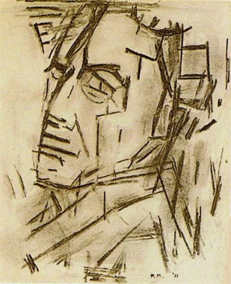

PIET MONDRIAN
INTRODUCTION

“he reached a point where his artistic vocabulary was reduced to simple geometric elements”
Pieter Cornelis Mondriaan, was a Dutch painter and art theoretician who is regarded as one of the greatest artists of the 20th century.
He is known for being one of the pioneers of 20th-century abstract art, as he changed his artistic direction from figurative painting to an increasingly abstract style, until he reached a point where his artistic vocabulary was reduced to simple geometric elements.